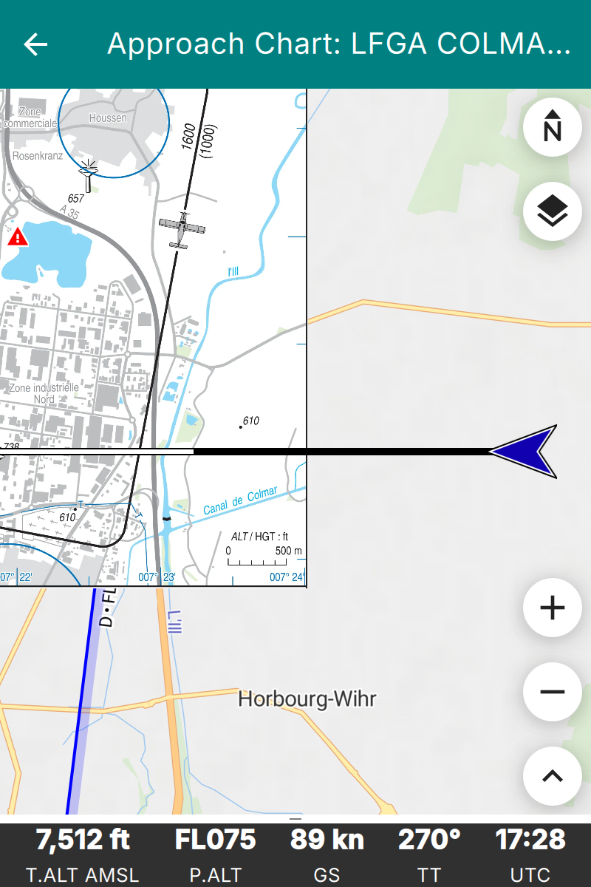

Visual Approach Charts
Enroute Flight Navigation can display visual approach charts on the moving map. The figure Moving map display with embedded approach chart shows how this will typically look.
{kind=link}

Moving map display with embedded approach chart
There are two ways to get approach charts onto your device.
For some countries, we distribute chart collections together with the country maps. The charts are installed and updated along with the maps, and no further action is required on your part. The section Download Approach Chart Collections explains the details.
You can import your own chart files, as explained in the section Import Approach Charts.
Download Approach Chart Collections
For some countries, we distribute a collection of approach charts as part of the country’s map set. At present, this is the case for France, whose charts are kindly provided by the Service de l’Information Aéronautique (SIA). The section Approach Charts lists the collections that are currently available, and the section Software and Data Licenses describes the licenses under which the charts are distributed.
To install a collection, simply install the country map: on the moving map screen, open the main menu and go to “Library/Maps and Data”. The page “Map and Data Library” will then open. Its “Maps” tab lists the available countries; map sets that contain approach charts show an entry “Approach Charts” in their description.
Once installed, the charts are available immediately. They are updated whenever you update the country map, and they are removed when you uninstall it.
Note
Not all countries have chart collections. If the country map that you are interested in does not offer approach charts, you can still import charts yourself, as described in the section Import Approach Charts.
Import Approach Charts
Enroute Flight Navigation accepts visual approach charts in one of the following formats.
Geo-referenced image files in GeoTIFF format.
TripKits that contain collections of approach charts for a specific area or flight route. The AIP Browser DE can produce TripKits for Germany.
Note
GeoTIFF is a complex format that supports many use cases, ranging from astronomy to high-precision land survey. Enroute Flight Navigation only supports a subset of the GeoTIFF standard. If you encounter a GeoTIFF file that Enroute Flight Navigation does not recognize, see the section Approach Chart Conversion Tools for possible remedies.
Obtain Approach Chart Files
Michael Paus’ free software AIP Browser DE can generate GeoTIFF images and TripKits for all German airfields. The data comes from Germany’s official AIP, as provided by DFS Deutsche Flugsicherung GmbH.
GeoRef Tool is a free, web-based application that allows users to upload an image (e.g., aerodrome charts, approach plates) and manually georeference it by assigning reference points. The tool then generates a GeoTIFF file that can be imported into Enroute Flight Navigation or other flight navigation software. This enables pilots and navigators to integrate custom maps with accurate geographic positioning, enhancing situational awareness during flight planning and navigation.
For more details, visit the GeoRef Tool Website.
Please get in touch with us if you are aware of other data sources. We will be glad to list them here.
Import Approach Chart Files
Transfer the GeoTIFF or TripKit file to your device and open the file on your device. The Section Import Data explains the process in detail.
Note
TripKits are ZIP files with specialized content. Trying to open a TripKit file, some file management utilities will automatically unpack the ZIP file rather than offering to open it in Enroute Flight Navigation. Along similar lines, GeoTIFF files are image files with specialized metadata and some file management utilities will launch an image viewing application rather than offering to open a GeoTIFF file in Enroute Flight Navigation.
If you encounter problems opening a TripKit or GeoTIFF file, look for an icon or menu item labeled “Open with…”. Some utilities open an appropriate context menu after a tap-and-hold gesture.
Manage Your Approach Chart Library
On the moving map screen, open the main menu and go to “Library/Maps and Data”. The page “Map and Data Library” will then open. The page has a “VAC” tab listing all approach charts installed on your device, whether downloaded or imported. The charts are grouped by origin: charts that came with a country map appear under the name of their collection, while charts that you imported yourself appear under the heading “Manually Imported”.
Use the context menus to retrieve basic information about a chart. The context menu entries “Rename” and “Uninstall” are available only for charts that you imported yourself. Charts that came with a country map are removed together with that map, on the “Maps” tab of the same page.
The three-dot menu at the top right of the screen allows clearing your approach chart library. This removes the charts that you imported yourself; charts that came with a country map are not affected.
Use Approach Charts
Once approach charts are installed, open the main menu and go to “Approach Charts”. The page “Visual Approach Charts” will then open. The page lists all approach charts installed in your device, sorted by distance to the current position. Below each chart name, a second line indicates the origin of the chart, such as “manually imported” or the name of the collection that the chart belongs to. Tap on a chart to open “Approach Chart” page, which shows a slightly simplified moving map with the approach chart superimposed on top of the usual map layer. As usual, tap on the left arrow symbol in the page title to close the page and return to the standard moving map display.
In order to avoid surprises in flight, Enroute Flight Navigation will not open the approach chart page automatically.
Note
The menu entry “Approach Charts” is only visible if approach charts are installed on your device. If you cannot find the menu entry, install some approach charts first.